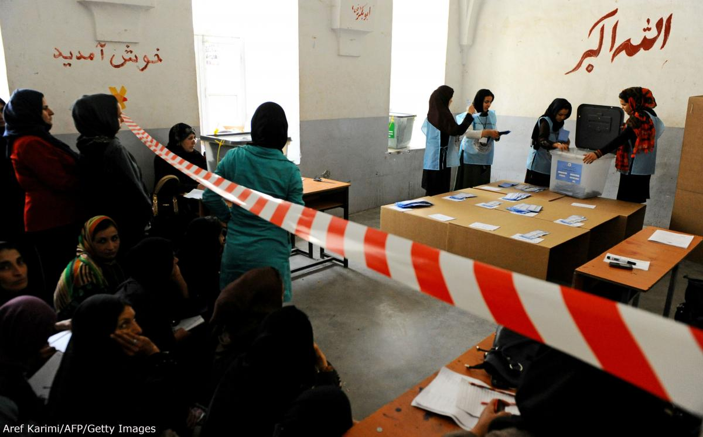

تضمین سلامت انتخابات
انتخابات چرخهای است که صرفا به روز رایگیری ختم نمیشود و لازم است که در سالها و ماههای قبل برای آن برنامهریزی شود. با این حال برای برگزاری یک انتخابات سالم و با کمترین میزان تخلفات و تقلب، باید امنیت و سلامت روز رایگیری مهمترین هدف نهاد مسئول برگزاری انتخابات باشد. در روز انتخابات باید مجموعهای از اقدامات برای تضمین سلامت رأیگیری انجام شود.

کنترل شعبههای رأیگیری
مدیریت کارآمد محل رأیگیری زمینه تخلفات مختلف را کاهش میدهد. مدیر شعبه اخذ رأی در کنترل محل رأیگیری باید چند موضوع عمده را مد نظر قرار دهد:
- تنها افراد مجاز باید حق ورود به شعبه اخذ رأی را داشته باشند. افراد مجاز عبارتند از رأیدهندگان، مسئولان برگزارکننده و دیگر افراد دارای مجوز؛
- هیچگونه فعالیت حزبی یا جانبدارانه به سود نامزدها نباید انجام شود. دامنه این ممنوعیت در چارچوب قانون انتخابات تعریف می شود؛
- هر گونه محدودیت لازم از نظر دسترسی یا ایجاد حریم در اطراف محل رأیگیری باید اِعمال شود؛
- نشانهها، موانع و منابع انسانی برای کنترل موثر جمعیت و صفوف رأیدهندگان بکار گرفته شوند؛
- ناظران و مسئولان شعب اخذ رأی باید اشراف کامل بر کلیه فعالیتهای در حال انجام در شعبه داشته باشند. در این میان اشراف بر جاهایی که وسایل و تجهیزات لازم برای رأی دادن در آنها قرار دارد، اتاقک مخصوص رأی دادن و صندوقهای رأی از اهمیت ویژهای برخوردار است.
کنترل هویت رأیدهندگان
پیش از اینکه ملزومات شرکت در رأیگیری در اختیار رأیدهندگان قرار گیرد. رأیدهندگان باید مدارکی در اثبات این حق ارایه دهند. برای اینکه فردی بجای فرد دیگری رأی ندهد، مسئولان شعبه اخذ رأی معمولا از رأیدهندگان مدرک شناسایی میخواهند.
کارتهای هویت مورد قبول برای احراز هویت باید عکس دار باشند یا حاوی عنصر دیگری مربوط به ویژگیهای شخصی رأیدهنده باشند که به آسانی قابل شناسایی باشد. در صورت امکان، استفاده از سیستمهای کارت هویت ملی با درجه اطمینان بالا ارجحیت دارد. این سیستمها را میتوان با هزینه نسبتا مناسبی پیاده کرد.
در غیر این صورت، در جاهایی که در موقع ثبت نام از رأیدهندگان کنترل هویت سفت و سختی انجام میشود، میتوان برای رأیدهندگان کارت شناسایی مخصوص رأی دادن صادر کرد. این کارتها در موقع ثبت نام (یا بعد از آن) در واقع نقش رسید ثبت نام را بازی خواهند کرد.
کنترل صلاحیت رأیدهندگان
در بررسی صلاحیت رأیدهندگان، مهمترین وظیفه مسئولان شعبه اخذ رأی این است که اطمینان حاصل کنند که در تهیه و استفاده از فهرست واجدان شرایط رأی دادن در یک شعبه بخصوص، نهایت دقت بکار رفته است. مطابقت دادن دقیق رأیدهندگان با فهرست واجدان شرایط و علامت زدن نام واجدانی که در رأیگیری شرکت کرده اند، اهمیت بسیار زیادی دارد.
کنترل تکمیلی با استفاده از کارتهای مخصوص رأیدهندگان، که در آن، شعبه مخصوص هر رأیدهنده قید شده باشد، میتواند کنترل این فرآیند را آسانتر کند.
در کنار این کنترلها میتوان از روشهای موثر مشابهی هم استفاده کرد. به کمک این روشهای تکمیلی اگر رأیدهندهای واجد شرایط رأی دادن باشد، اما به دلیل اشتباهات اداری نامش در فهرست واجدان شرایط نباشد، می تواند رأی بدهد. همچنین ممکن است بتوان چارچوبی قانونی پیشبینی کرد تا کسانی که قبلا در فهرست واجدان شرایط رأی دادن ثبت نام نکرده اند، در همان روز رأیگیری این کار را انجام دهند.
مخفی بودن رأی
مخفی بودن رأی از اصول اساسی آزادی انتخاب در رأی دادن است. در نتیجه برای کنترل مخفی بودن رأی، مسئولان شعبه اخذ رأی باید از برقراری شرایط زیر را در داخل شعبه اطمینان حاصل کنند:
- رأیدهندگان در داخل اتاقک مخصوص رأی تنها باشند (بجز در مواقعی که به کمک فرد دیگری نیاز است)؛
- تعرفهها بهدرستی تا شده، یا در پاکت قرار داده شوند، و در موقع خروج رأیدهنده از اتاقک رأی او مخفی باشد؛
- در داخل شعبه اخذ رأی هیچکس از رأیدهنده نپرسد به چه کسی رأی داده است (یا قصد دارد رأی بدهد).
مسئله نظرسنجی رسانهها یا فعالان سیاسی از رأیدهندگان بلافاصله پس از خروجشان از شعبه اخذ رأی هم ممکن است نگرانیهایی ایجاد کند. چنین فعالیتهایی باید بدقت تحت نظارت باشند تا اطمینان حاصل شود که کسی مزاحم رأیدهندگان نمیشود.
کنترل ابزار و لوازم رایگیری
ابزار و وسایل لازم برای کار رأیگیری باید قبل، در حین، و بعد از رأیگیری تحت کنترل باشند. موارد زیر نیازمند توجه ویژه هستند:
- ابزار و لوازمی که دارای شماره هستند و به تعداد معینی تهیه شده اند، باید همواره تحت نظارت کامل باشند (میزها یا محفظههایی که ابزار و لوازم شمارهدار مخصوص رأی دادن داخل یا روی آنها قرار دارند، هیچگاه نباید به حال خود رها شوند؛ ابزار و لوازمی که در لحظه مورد استفاده نیستند هم باید در محفظههای قفلدار نگهداری شوند)؛
- پیش از استفاده از صندوقهای رأی، باید آنها را در حضور شاهدان لاک و مُهر کرد؛
- صندوقهای رأی (یا کامپیوترها و ماشینهای رأی) باید تحت نظارت باشند تا اطمینان حاصل شود که هر رأیدهندهای تنها یک بار رأی داده، تنها ابزار (تعرفهها) معتبر داخل صندوق انداخته شده، لاک و مُهر صندوقها دستنخورده مانده، و تعرفهها در حین رأیگیری از صندوق خارج نشده اند؛
- شمارش و تطبیق دقیق همه تعرفههای صادر شده و استفاده نشده، و همچنین تعرفههای صادر شدهای که مورد استفاده رأیدهندگان قرار گرفته اند.
جلوگیری از تهدید و ارعاب
مسئولان هر شعبه اخذ رأی باید مراقب فضای حاکم بر شعبه باشند، و با هشیاری جلوی هرگونه تهدید و ارعاب رأیدهندگان را بگیرند.
کنترل دقیق ورود افراد و جلوگیری از ورود افراد فاقد صلاحیت، و همچنین ضبط سلاح افرادی که وارد شعبه میشوند به تحقق این هدف کمک میکند. مدیران شعب اخذ رأی باید مواظب اتفاقات زیر باشند:
- حضور مقامات حکومتی یا امنیتی در شعبه به نحوی که موجب احساس ترس و تهدید رأیدهندگان شود؛
- تلاش مافوق برای اِعمال نفوذ بر کارکنان زیردستی (در نیروهای نظامی یا دیگر نهادهای دارای سلسله مراتب) که همراه مافوقشان به محل رأیگیری آمده اند؛
- تلاش نمایندگان احزاب یا نامزدها، ناظران یا مسئولان شعبه اخذ رأی برای برقراری ارتباط یا اِعمال نفوذ جانبدارانه بر تصمیم رأیدهندگان؛
- تهدید و ارعاب مسئولان شعبه توسط نمایندگان احزاب یا نامزدها، مثلا از طریق اعتراض با صدای بلند، تهدید کلامی، یا تکرار انتقادهای علنی قبلی (مثلا در دور قبلی انتخابات)، و یا ایجاد جو ارعاب توسط مقامات حکومتی حاضر در شعبه
- برقرای ارتباط نزدیک با نیروهای امنیتی اختصاص داده شده به شعبه اخذ رأی.
جلوگیری از چندبار رأی دادن
اجرای دقیق اقدامات پیشگیرانه برای جلوگیری از چندبار رأی دادن بسیار موثرتر از تلاش برای بررسی و اصلاح اثرات تخلفات احتمالی، بعد از وقوع آنهاست:
- سادهترین و موثرترین روش کنترل استفاده از فهرستهای رأیدهندگان یکسان و دقیق در هر یک از محلهای انجام رأیگیری، و داشتن رویههای سفت و سخت برای احراز هویت رأیدهندگان است.
- کنترل سفت و سخت هویت، در موقع ثبت نام رأیدهندگان، بخصوص اگر با صدور کارت هویت ویژه رأی دادن همراه باشد، در بررسی هویت رأیدهندگان و جلوگیری از چندبار رأی دادن موثر خواهد بود.
در مواردی که کیفیت فرآیند احراز هویت رأیدهندگان ، صحت و دقت فهرستهای واجدان شرایط رأی دادن، درستی علامتگذاریهای انجامشده توسط مسئولان شعبه اخذ رأی در فهرست رأیدهندگان، یا اختلاف میان فهرستهای واجدان شرایط مورد استفاده در یک شعبه، مورد تردید باشد، برای تضمین استاندارد بالای رأیگیری، لازم است اقدامات کنترلی اضافی دیگری هم انجام شود. از جمله این اقدامات اضافی میتوان به موارد زیر اشاره کرد:
- ابطال یا مهر زدن روی کارتهای شناسایی ویژه رأی دادن که مشخصا برای شرکت در رأیگیری صادر شده اند. به این ترتیب معلوم میشود که فرد مورد نظر یک بار رأی داده است یا نه. نتیجهبخشی این اقدام کنترلی به اعتبار کارت شناسایی ویژه رأی دادن و امکان انتقال آن بهغیر بستگی دارد؛
- علامتگذاری یا یادداشت مشخصات هرگونه کارت شناسایی دیگر که برای احراز هویت ارائه شده است. به این ترتیب مشخص میشود که فرد مورد نظر قبلا یک بار رأی داده است یا نه. کارآیی این روش هم به اعتبار و قابلیت انتقال احتمالی کارت شناسایی مذکور بستگی خواهد داشت؛
- علامتگذاری رأیدهندگان در موقع رأیگیری با جوهر مخصوص
نمایندگان احزاب و نامزدها
حضور و نظارت نمایندگان احزاب و نامزدها در شعبههای اخذ رأی به شفافیت بیشتر این فرآیند کمک میکند. علاوه بر آن، این نمایندگان میتوانند مشکلات احتمالی را به اطلاع مسئولان شعبه برسانند و به این ترتیب به حفظ سلامت رأیگیری کمک کنند. طراحی ساختمان شعبه اخذ رأی باید طوری باشد که امکان اشراف کامل بر همه فعالیتهای مربوط به رأیگیری - از جمله ورودیهای محل، بخش بررسی صلاحیتها، محلهای صدور تعرفهها، اتاقک مخصوص رأی دادن و صندوقهای رأی - را برای مسئولان شعبه، نمایندگان احزاب و نامزدها و ناظران حاضر فراهم کند.
نمایندگان احزاب و نامزدها باید حق نظارت بر همه فعالیتهای جاری در شعبه را داشته باشند؛ از بررسی تعرفهها پیش از رأیگیری و لاک و مُهر صندوقهای رأی گرفته، تا تطبیق و تلفیق تعرفهها پس از انجام رأیگیری و بستهبندی اسناد و وسایل.
نمایندگان احزاب و نامزدها ترجیحا باید حق داشته باشند در صورت مشاهده هرگونه تخلف از روندهای قانونی نسبت به صلاحیت رأیدهندگان و اقدامات مسئولان شعبه اخذ رأی اعتراض کنند.
اعتراض به رأیدهندگان و فرآیند رأیگیری در موارد زیر میتواند به سلامت بیشتر انتخابات کمک کند:
- به رأیدهندگانی که بنظر میرسد حق رأی ندارند، اجازه شرکت در رأیگیری داده شده باشد، و یا جلوی رأی دادن رأیدهندگان واجد شرایط گرفته شده باشد؛
- به رأیدهندگانی که بنظر میرسد قبلا رأی داده اند، دوباره اجازه شرکت در رأیگیری داده شده باشد؛
- تعرفههای اضافی به صندوق ریخته شده باشد؛
- تعرفهها از شعبه اخذ رأی خارج، و کار پُرکردن آنها در خارج از شعبه انجام شده باشد، و سپس رأیدهندگان آنها را دوباره به شعبه برگردانده، و به صندوق ریخته باشند؛
- تعرفهها یا پاکتهای حاوی تعرفه مورد استفاده رأیدهندگان با تعرفهها یا پاکتهای رسمی انتخابات متفاوت باشند؛
- رأیدهندگان تهدید و ارعاب شده باشند؛
- نمایندگان دیگر احزاب یا نامزدها در جریان رأیگیری، تعرفهها یا پاکتهای حاوی تعرفه را دستکاری کرده باشند؛
- کسانی بدون اجازه به رأیدهندگان در پُرکردن تعرفهشان کمک کنند.